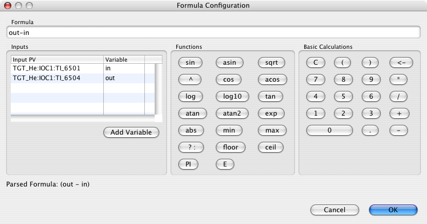
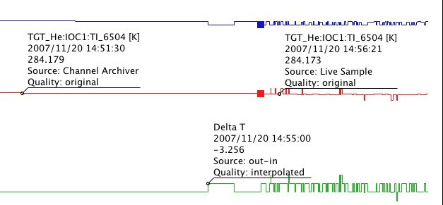

Formula
The context menu of the Plot Window
as well as the Data Browser Config View
allows the addition of formulas.
Formula Configuration
When adding a formula, or later selecting it in the Config View,
the Formula Configuration Dialog opens.

- The Inputs section lists all the PVs in the current configuration
as possible inputs, and allows the assignment of shorter Variable
names for use in the formula.
Click on a Variable name to edit.
- Edit the formula, either by typing directly in the Formula
text field, or by using the Functions and Basic Calculations.
- The Parsed Formula info on the bottom will show basic error messages.
Basic Calculations
... follow the behavior of most pocket calculators.
Functions
- All the functions shown in the dialog but not specifically mentioned in
here take one argument, for example
sin(x).
atan2(y,x) takes two arguments and computes
atan(y/x) with added consideration of the four possible
quadrants.
- All trigonometric functions operate in radians.
The functions
toDegrees resp. toRadians
can be used to convert, for example:
toDegrees(sin(x+toRadians(30))).
min, max take one or more arguments,
for example min(x, y, 1).
^ as in x^y
raises x to the power of y.
? : is an if-then-else operator,
for example x > 0 ? x^2 : 0.
- Boolean operations
==,
!=,
>,
>=,
<,
<=
are supported, but only accessible by directly typing them into the Formula.
rnd(x) provides a random number [0...x[.
PI, E are predefined constants.
Formula Behavior at Runtime
The formula is evaluated based on the data shown in the plot,
because this allows seamless operation on archived as well as life samples
from different sources.

On the downside, the data quality of computed samples is always considered
"interpolated" and limited to the time stamp granularity of what's
visible in the plot.
When trying to export data from both the archive and a formula,
a corresponding warning points this out.